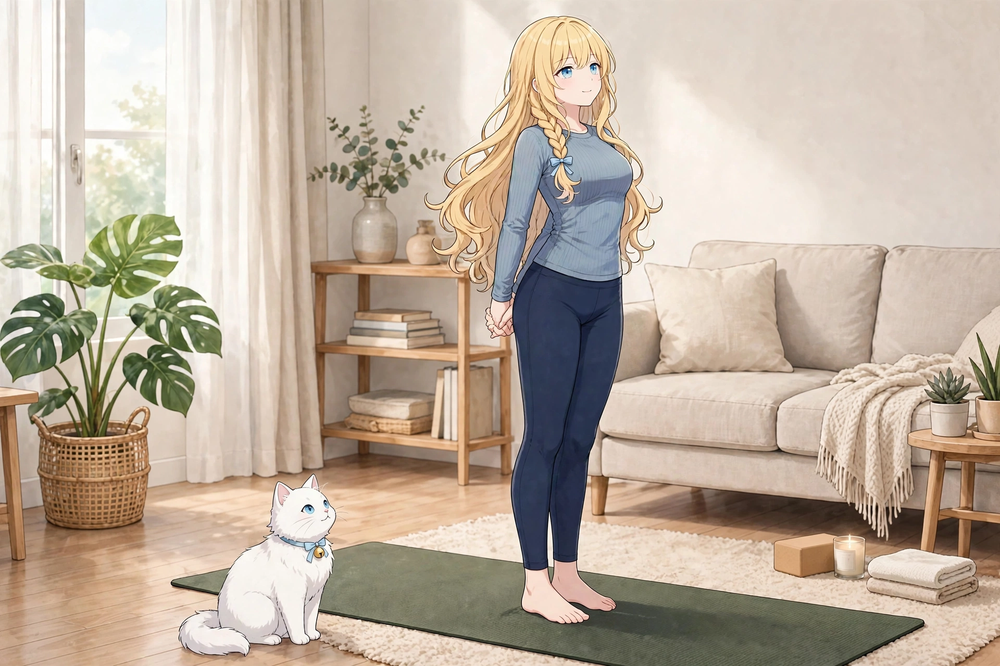
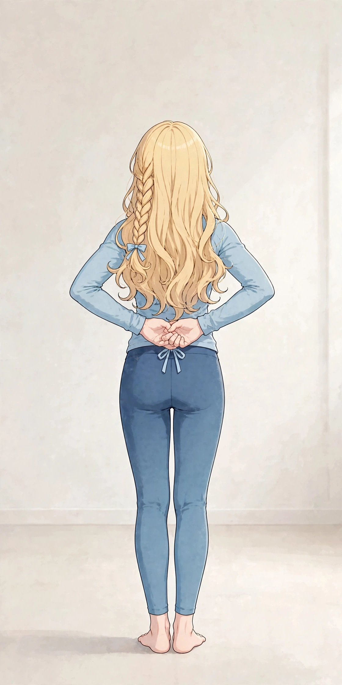
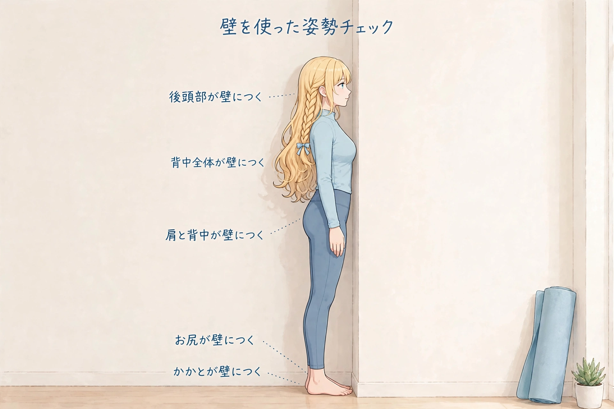

巻き肩・猫背を整える｜肩甲骨まわりの5分ケア（女性）

始める前に：痛み・しびれがある場合は行わないでください。途中で痛みが出たら中止し、気になる症状が続く場合は医療機関に相談してください。回数や秒数は目安で、無理のない範囲から始めてください。
セラフィナ：巻き肩になると、ブラウスやジャケットの背中が丸く見えます。肩甲骨まわりを動かす短いケアを、服の見え方と一緒にまとめました。所要は約5分です。
やり方1：背中で手を組む肩甲骨寄せ（10回）
- 背筋を伸ばして立ち、両手を背中の後ろで組みます
- 息を吐きながら、左右の肩甲骨を背中の中心へ寄せます（図1）
- 3秒保って、ゆっくり戻します。反動はつけません

やり方2：壁立ちチェック（1分）
仕上げに壁で姿勢を確認します（図2）。4点の触れ方で、自分のクセが分かります。

服の見え方との関係
肩の位置が後ろに戻ると、羽織りものの肩線が合いやすくなります。服側の選び方は巻き肩・猫背が気になる人の羽織りものの選び方にまとめています。
この記事のテーマに合う用品
PR：背中ケアに合う用品（PR）


あわせて読みたい：トレーニング用品一覧／ぽっこりお腹のドローイン